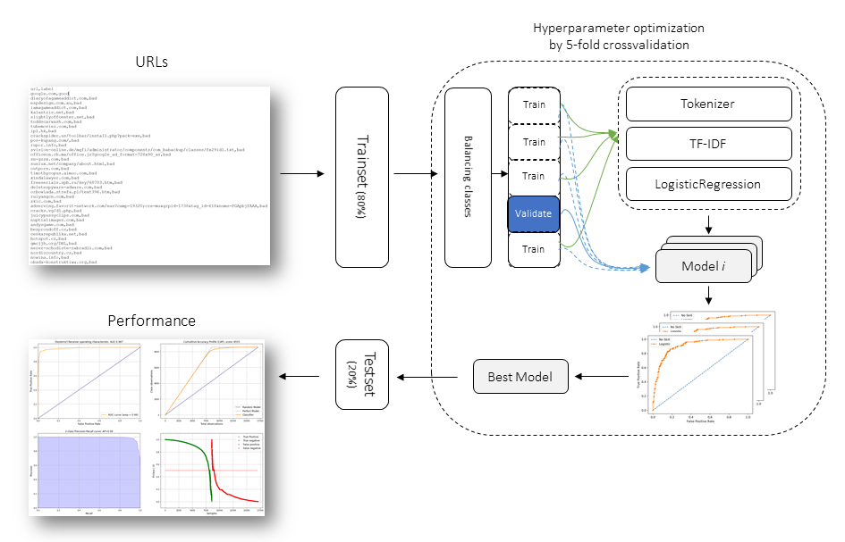

Background
Local coding models are often sold on two claims: strong code quality and long context. Short-prompt leaderboards do not test both at once. localbenchmark is built to measure them together under realistic local constraints.
Aim
Provide a single, resume-safe evaluation pipeline that:
Runs HumanEval-style coding tasks through LM Studio
Stresses context windows (e.g. 50k–180k tokens), with optional fill
Records pass rate, decode speed, TTFT, and peak GPU memory
Aborts configurations that are too slow to finish in practice
Produces rank-sum plots so quality and speed are not confused
Results
Each model × context run is stored in durable CSV files. A summary file tracks finished configurations so restarts skip completed work. Ranking plots combine pass rate, speed, latency, memory, and context capability — with higher weight on pass rate and decode speed.
Schematic overview
The evaluation flow is:
Discover each model’s max context from LM Studio
Load the model at the requested window size
Optionally fill part of the context with unrelated code
Run coding problems; execute generated code against tests
Log metrics; abort if decode speed stays below a minimum
Aggregate results and generate ranking / trend plots

High-level flow: LM Studio → load model → HumanEval / speed probe → CSV → plots.